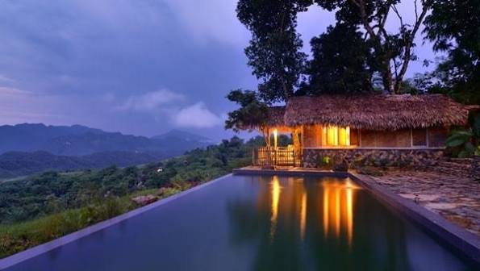
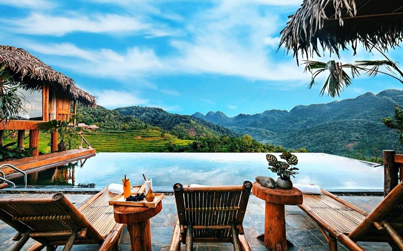
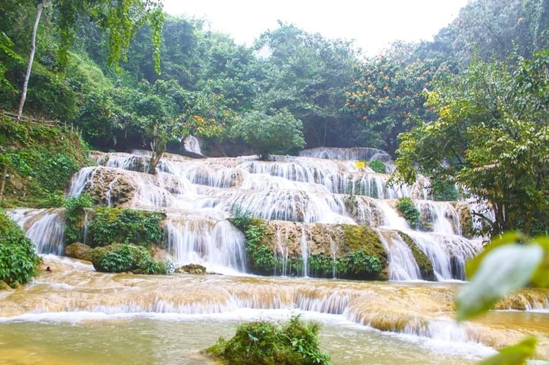
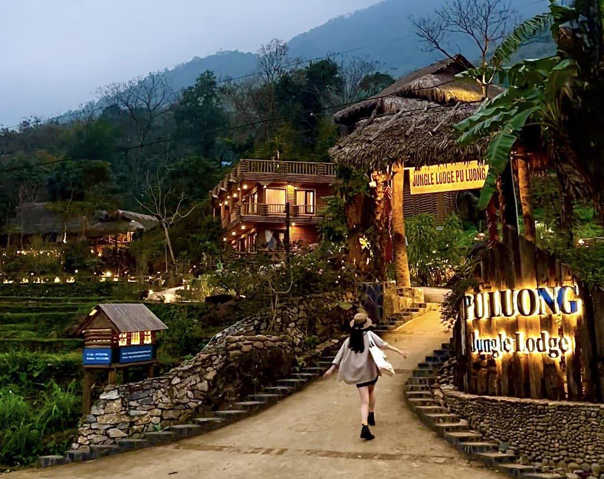
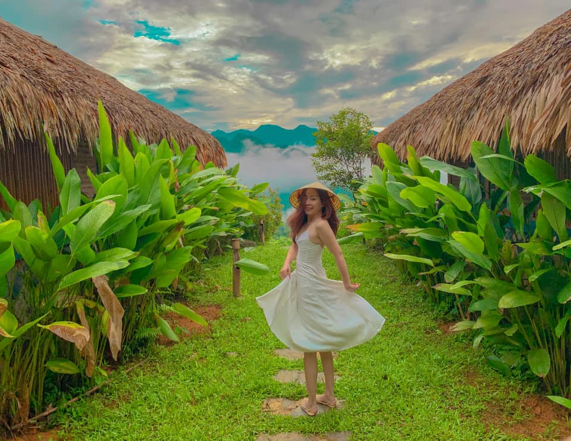
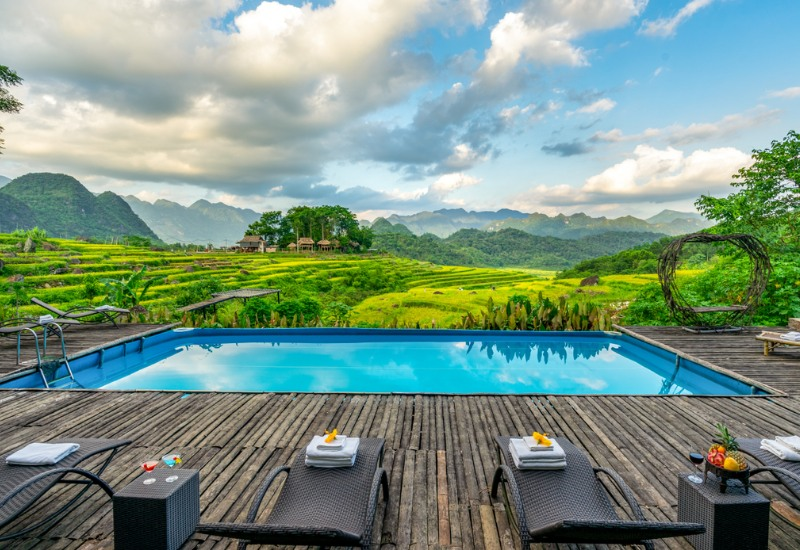
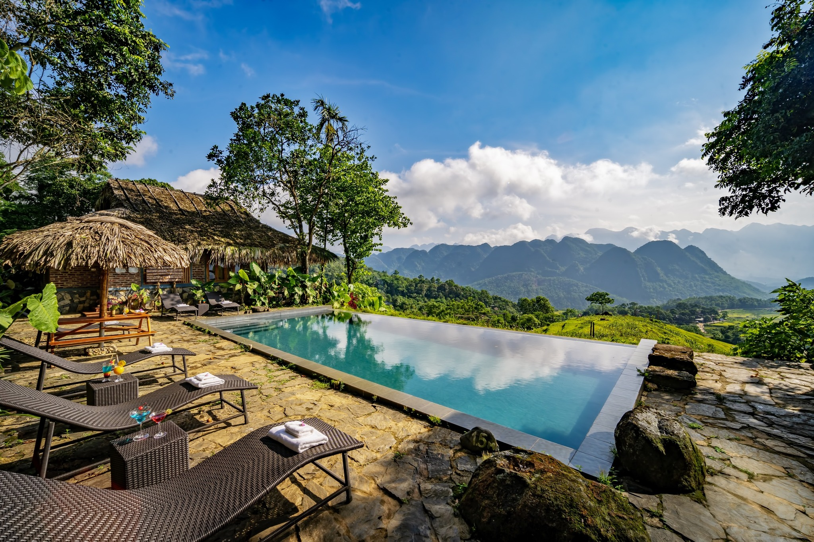

Khởi nguồn từ khát vọng bảo tồn tài nguyên tre luồng và văn hóa bản địa
Pù Luông Eco-Bamboo Hub ra đời không chỉ như một điểm lưu trú, mà là một mô hình Kinh doanh Xã hội tiên phong tại Thanh Hóa. Chúng tôi chuyển hóa tài nguyên thiên nhiên – những rừng tre luồng dồi dào tại vùng lõi Pù Luông – thành chuỗi giá trị du lịch bền vững.
Bằng việc liên kết với các hộ dân địa phương tận dụng nhà sàn có sẵn, áp dụng bí quyết công nghệ hấp sấy tre hữu cơ không hóa chất, dự án giải quyết xuất sắc bài toán sinh kế (Mục 7 - Nguồn lực chính). Mỗi bước chân của bạn tại đây, mỗi sản phẩm tre bạn sử dụng đều trực tiếp đóng góp vào quỹ bảo vệ môi trường.

Khung cảnh thiên nhiên chữa lành với thung lũng ruộng bậc thang khép kín, sương mây vờn hiên nhà

Ruộng bậc thang Pù Luông rực rỡ sắc vàng.
Khí hậu mát mẻ, sương mù bao phủ thung lũng sáng sớm.
Dòng suối trong vắt róc rách giữa rừng già nguyên sinh.
Các hoạt động được thiết kế chuyên sâu, tối ưu hóa điểm chạm trải nghiệm (Experience Design)

Không chỉ là đi bộ, hướng dẫn viên bản địa sẽ kể cho bạn nghe những câu chuyện về hệ sinh thái rừng Pù Luông. Trải nghiệm chèo bè tre mộc mạc trên dòng suối tự nhiên.

Tự tay cưa, mài và làm ra chiếc sáo nứa, cốc giữ nhiệt bằng tre hữu cơ dưới sự hướng dẫn của nghệ nhân đan lát. Món quà lưu niệm độc bản mang về thành phố.

Thưởng thức Gà nướng nứa, Cơm lam nguyên bản. Chuỗi cung ứng ngắn từ vườn của người nông dân trực tiếp lên bàn ăn giúp tối ưu hương vị và sức khỏe.
Áp dụng chiến lược đóng gói sản phẩm (Product Bundling) nhằm tối ưu trải nghiệm khách hàng
Những thông tin mới nhất về bảo tồn thiên nhiên và du lịch sinh thái

Mô hình Kinh doanh xã hội tại Pù Luông đang chứng minh tính hiệu quả khi không chỉ mang lại doanh thu mà còn nâng cao kỹ năng cho đồng bào dân tộc, giải quyết sinh kế bền vững thông qua tài nguyên tre luồng...
Đọc tiếp ⟶
Để bắt trọn khoảnh khắc "thung lũng vàng", du khách nên sắp xếp thời gian đến Pù Luông vào khoảng cuối tháng 5, đầu tháng 6 hoặc tháng 9, tháng 10 hàng năm. Khí hậu lúc này vô cùng trong lành và mát mẻ...
Đọc tiếp ⟶